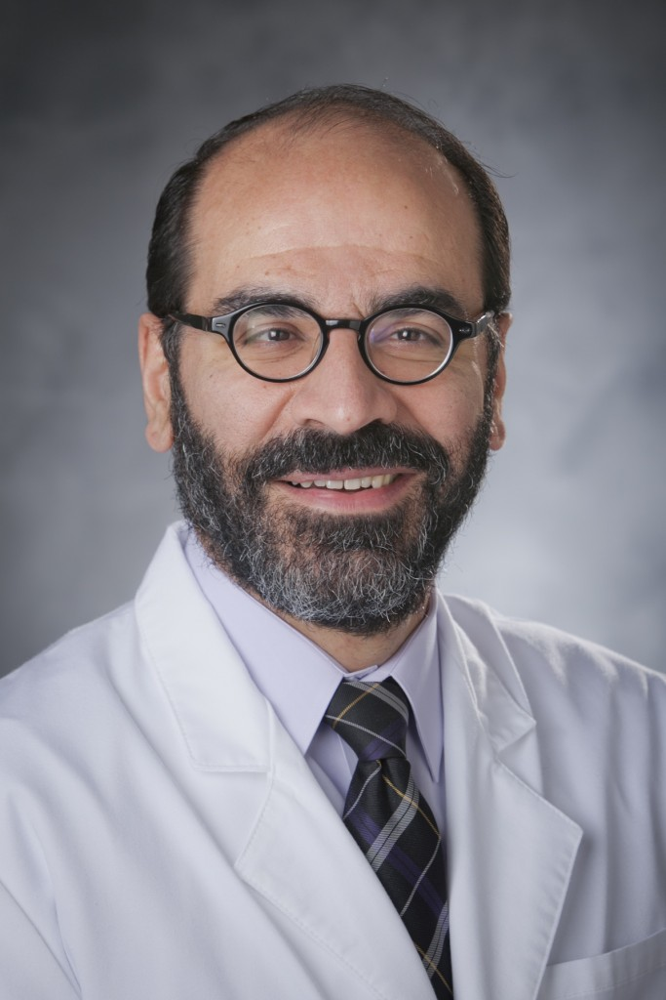
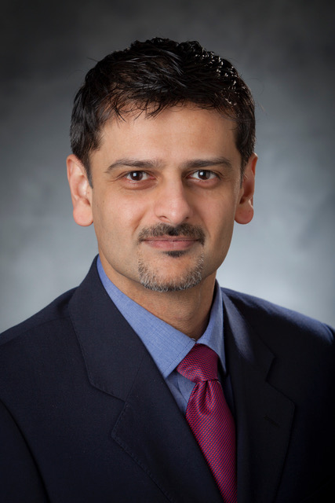
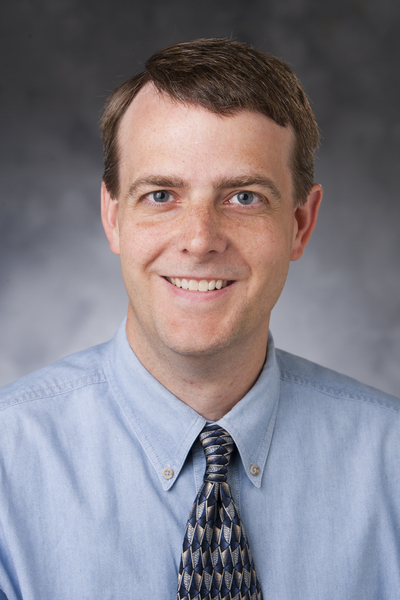
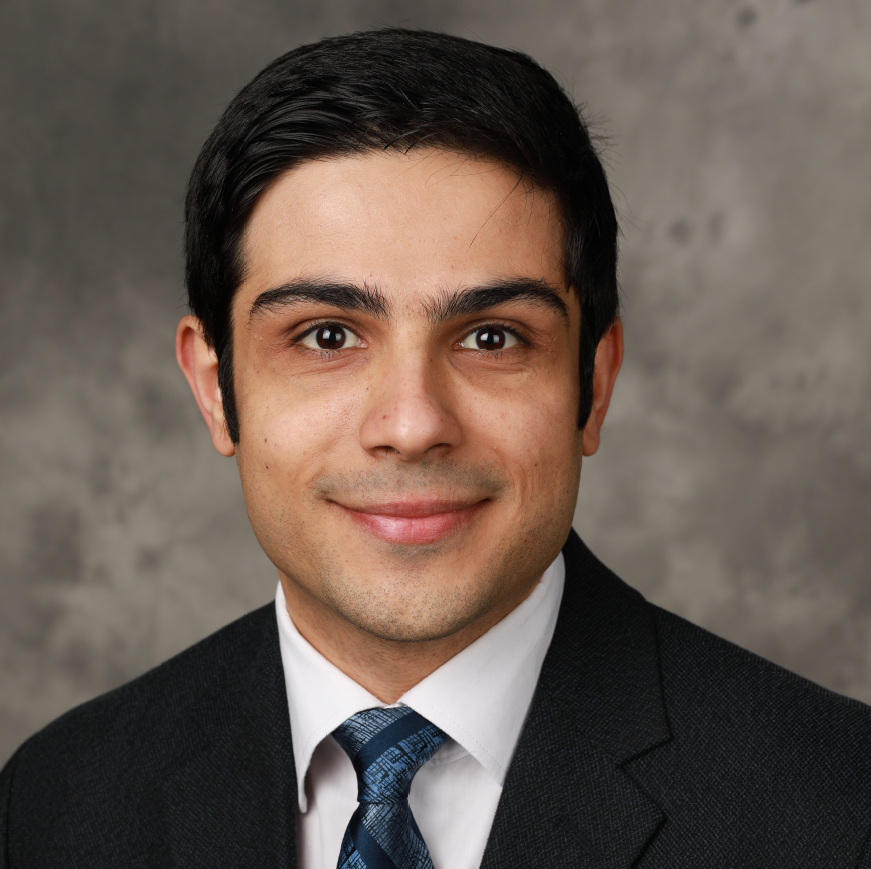

People
Faculty Members
|  | Ehsan Samei, PhD, DABR, FAAPM, FSPIE, FAIMBE Chief, Duke Clinical Imaging Physics Group Director, Medical Physics Graduate Program Director, Imaging Physics Residency Program Professor, Departments of Radiology, Physics, Biomedical Engineering, Electrical and Computer Engineering |
|  | Anuj J. Kapadia, PhD Director of Graduate Studies, Medical Physics Graduate Program Assistant Professor, Department of Radiology |
|  | W. Paul Segars, PhD Associate Professor, Department of Radiology Associate Professor, Department of Biomedical Engineering |
Research Staff
Poopy diScoop, PhD Chief, Duke Clinical Imaging Physics Group Director, Medical Physics Graduate Program Director, Imaging Physics Residency Program Professor, Departments of Radiology, Physics, Biomedical Engineering, Electrical and Computer Engineering |
|
Diddy Whoop, PhD Director of Graduate Studies, Medical Physics Graduate Program Assistant Professor, Department of Radiology |
|
Scoopity Woops, PhD Associate Professor, Department of Radiology Associate Professor, Department of Biomedical Engineering |
Graduate Students
|  | Ehsan Abadi, M.Sc. Ehsan Abadi got his B.Sc. and M.Sc. degrees in Electrical Engineering and Biomedical Engineering at the University of Tehran. He is currentlya PhD candidate in Electrical Engineering and a graduate research assistant in Carl E. Ravin Advanced Imaging Laboratories at Duke University. His main research interests are computational phantom modeling, medical imaging simulations, image processing, and machine learning. | Google Scholar | Research Gate | |
 |
Jocelyn M. Hoye Jocelyn is a Medical Physics PhD student researching radiomics, quantitative imaging, machine learning, and radiation dosimetry in x-ray-based imaging. The goal of her dissertation project is to use quantitative features measured from Computed Tomography images to predict patient response to lung cancer therapy. She received her Bachelor of Science in Physics and Mathematics from Bates College in Lewiston, Maine in 2015. She is a Massachusetts native and enjoys hiking, eating, and fitness classes. | Google Scholar | Research Gate | |
Scoopity Woops, MS Associate Professor, Department of Radiology Associate Professor, Department of Biomedical Engineering |
Undergraduate Students
Poopy diScoop Google Scholar | Research Gate Director, Imaging Physics Residency Program Professor, Departments of Radiology, Physics, Biomedical Engineering, Electrical and Computer Engineering |
|
Diddy Whoop Director of Graduate Studies, Medical Physics Graduate Program Assistant Professor, Department of Radiology |
|
Scoopity Woops Associate Professor, Department of Radiology Associate Professor, Department of Biomedical Engineering |